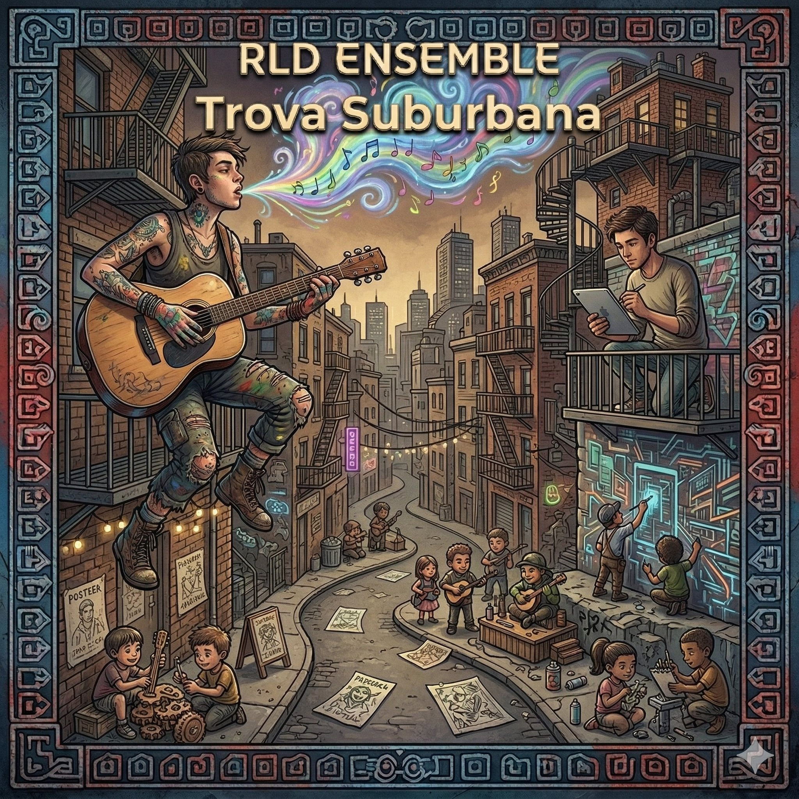

Crónicas del Anáhuac · Capítulo 04
Trova Suburbana I
Todo lo que el tiempo guarda sin avisar
Trova íntima y baladas urbanas desde la orilla cotidiana. Cafeterías, madrugadas, espejos y calles — 10 canciones originales en español que miran de cerca lo que otros pasan por alto.
← Volver a Crónicas del Anáhuac
Proyecto
Crónicas del Anáhuac
Capítulo
04 de 05
Canciones
10 tracks
Idiomas
Español
Artista
RLD ENSEMBLE
Estado
10 tracks · Completo
Tracklist
LAS CANCIONES
#
Canción
Idioma
Letra
Spotify
Ya disponible en plataformas digitales. Todas las canciones son originales, escritas por RLD en el cruce entre inteligencia artificial, software de producción y creatividad humana.
Escuchar en